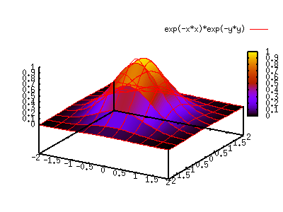
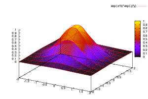
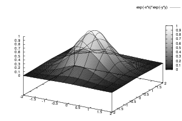
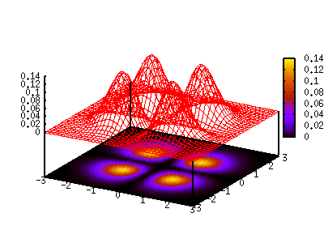
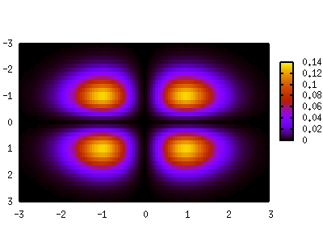
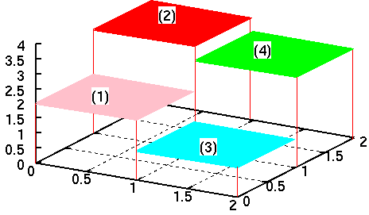
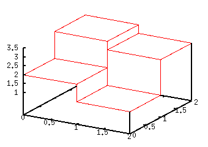
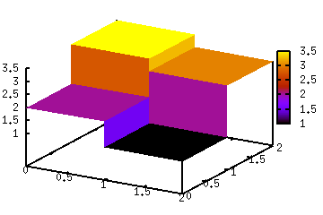

- not so Frequently Asked Questions -
update 2004/12/17
|
|
- not so Frequently Asked Questions - update 2004/12/17
|
|
not so FAQ |
3-Dim Plot with a Color-Map (pm3d)How do I draw a colored 3D figure ?[ver.4] ONLY ! Gnuplot draws 3D figures with lines and / or points, in addition, ver.3.8 or 4.0 allows you to draw a color-mapped 3D figure by setting pm3d . The figure is shown on your screen as well as PostScript or some image formats like PNG/JPG. gnuplot> set xrange [-2:2] gnuplot> set yrange [-2:2] gnuplot> set pm3d gnuplot> splot exp(-x*x)*exp(-y*y) 
You can choose color or gray-scale by the terminal option of color/monochrome . The gray-scale figure can be drawn by set palette gray , but the surface grid lines are still colored in this case. The following two examples are for the PostScript terminal. gnuplot> set term postscript eps enhanced color gnuplot> set output "color.eps" gnuplot> replot gnuplot> set term postscript eps enhanced monochrome gnuplot> set output "mono.eps" gnuplot> replot


 I want to draw colors for contours.[ver.4] ONLY ! A contour map of gnuplot is shown by lines. The colored contour by pm3d is something like a colored density distribution, which means, each piece of colored surface is mapped on the bottom/top plain. To show this on the bottom, add the at b option to the set pm3d command. gnuplot> set pm3d at b gnuplot> set ticslevel 0.8 gnuplot> set isosample 40,40 gnuplot> splot x*x*exp(-x*x)*y*y*exp(-y*y) 
With pm3d, it is very easy to see the bottom surface in the 2D plot. gnuplot> set pm3d map gnuplot> splot x*x*exp(-x*x)*y*y*exp(-y*y) 
Pseudo 3D Bar graphSince gnuplot cannot draw a 3D-bar graph, we need a little trick to make it. Suppose we have the following 3D data. # X Y Z 0.0 0.0 2.0 0.0 1.0 3.5 1.0 0.0 1.0 1.0 1.0 3.0 The first line means Z=2 when 0< X <1, 0< Y <1, and it corresponds to the area (1) in the next figure. The data file does not contain maximal values. The ranges of X and Y are implicitly assumed as 1< Y <2, 1< Y <2, and the Z value is 3.0. We will make a 3D histgram like this. 
Now we expand the data with some programs/tools. See the figure above at X=0, the Y values are step function changing Y=2.0, 2.0, 3.5, and 3.5. This step function is expressed as one line in a 3D space. Same can be consider for X=1 and X=2. # X Y Z 0.0 0.0 2.0 0.0 1.0 2.0 0.0 1.0 3.5 0.0 2.0 3.5 1.0 0.0 2.0 1.0 1.0 2.0 1.0 1.0 3.5 1.0 2.0 3.5 1.0 0.0 1.0 1.0 1.0 1.0 1.0 1.0 3.0 1.0 2.0 3.0 2.0 0.0 1.0 2.0 1.0 1.0 2.0 1.0 3.0 2.0 2.0 3.0 Once you prepare your data in such a way, we just depict them with lines. A program to process the data can be .... your homework. gnuplot> set hidden3d gnuplot> splot "test.dat" with lines 
[ver.4] ONLY ! When your gnuplot is ver.4, a funcy figure can be made with pm3d. gnuplot> set pm3d gnuplot> splot "test.dat" with pm3d 
|